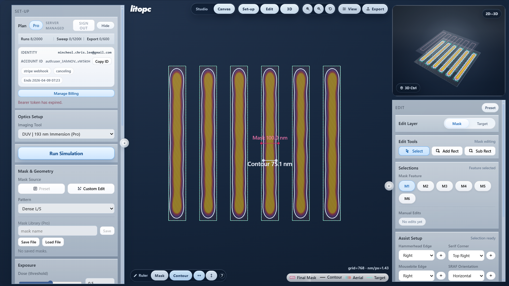

Without correction
Non-OPC

litopc = lithography + OPC.
Lithography is to shine light through a mask to print patterns on silicon. OPC means optical proximity correction: intentionally changing the mask so the printed semiconductor pattern comes out closer to the target.

A clean L-shape on the mask can miss the target after lithography. OPC changes the mask first so the contour on silicon lands closer to the shape you actually want.

litopc is built for educational use. It keeps OPC easy to approach, easy to visualize, and easy to test before you move on to heavier tools.
Start from representative masks instead of a full process stack or research codebase.
Read mask, aerial image, contour, and silicon-side behavior in one workspace.
Edit the mask, compare runs, and see what the correction actually changes.